| 1.-Dragon Ball |
apareció inicialmente como un comic japonés o manga escrito e ilustrado por Akira Toriyama. Fue publicado originalmente en la revista Shōnen Jump, de la editorial japonesa Shūeisha, entre los años 1984 y 1995. Luego de varios años se realizaron las producciones de animes también con gran éxito. |
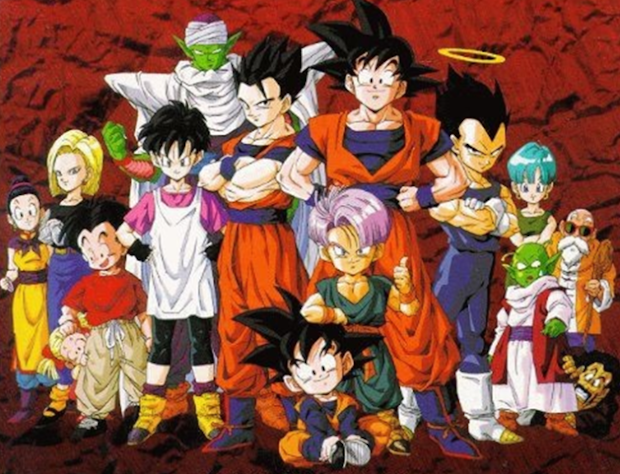 |
| 2.-Naruto |
Naruto se inició como una serie de manga con textos e ilustraciones de Masashi Kishimoto en 1999. Fue publicado como manga por la editorial Shūeisha en la revista semanal japonesa Shōnen Jump, y su gran éxito entre el público joven hizo que fuera adaptada también para la televisión.
El anime se empezó a transmitir en 2002 por la cadena televisiva TV Tokyo y tuvo luego una gran trascendencia a nivel internacional.
La trama de Naruto relata la historia de un adolescente ninja llamado Naruto Uzumaki que es huérfano de padres que fallecieron ante el ataque del Zorro Demonio de Nueve Colas. El adolescente aspira a convertirse en un Hokage, un líder reconocido en la aldea. |
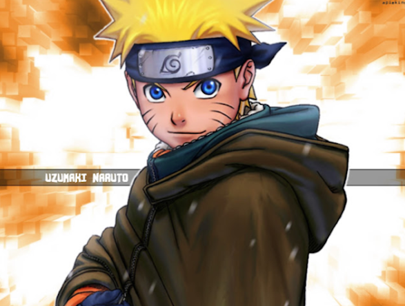 |
| 3.-Los Caballeros del Zodíaco |
Saint Seiya conocida en muchos países como Los Caballeros del Zodiaco, es una serie de manga con textos e ilustraciones de Masami Kurumada.
Se inició en 1985 como manga en la revista Shūkan Shōnen Jump de la editorial Shūeisha y luego se adaptó a la televisión como anime con gran suceso.
El éxito de Los Caballeros del Zodiaco ha dado lugar a diversas adaptaciones como precuelas y secuelas de la serie, remix, películas animadas y videojuegos entre otras.
El argumento de la serie trata acerca de un grupo de jóvenes guerreros que son denominados los “santos o «caballeros» dentro de los cuales hay un notorio líder que es Seiya, el caballero que porta la armadura de Pegaso. |
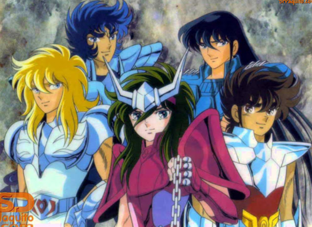 |
| 4.-One Piece |
One Piece es uno de los mangas más populares de todos los tiempos. Fue escrito e ilustrado por Eiichirō Oda. Se empezó a publicar en la revista japonesa Weekly Shōnen Jump en 1997 y se han publicado 101 volúmenes batiendo record de ventas.
La adaptación al anime también fue exitosa tanto que está considerado entre los mejores animes de todos los tiempos según los distintos rankings de los conocedores del género. |
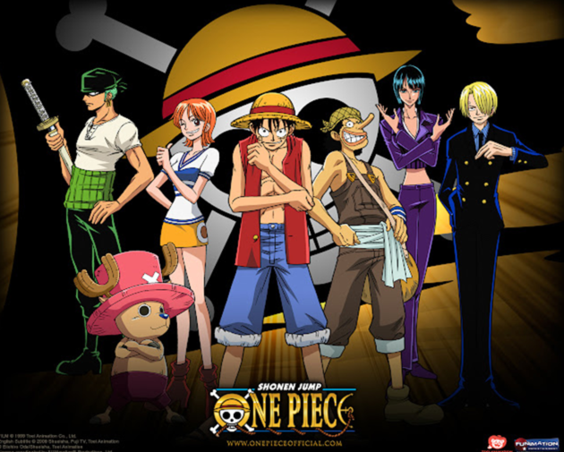 |
| 5.-Pokémon |
El término Pokemon está referido a una especie de abreviatura de Pocket Monsters lo que en español significa Monstruos de bolsillo.
En este caso, la serie de TV tal como la conocemos no se basa en un manga como tradicionalmente sucede con las producciones japonesas.
Todo empieza con el éxito de la saga de los videojuegos Pokemon, a partir de allí se adapta el mismo año la trama a los dibujos o animes producidos por la compañía OLM, Inc y se da inicio a las transmisiones por la cadena TV Tokyo en abril de 1997.
El éxito de Pokemon fue impresionante con una primera temporada de 276 capítulos. La popularidad del anime no solo se dio en Japón sino que se extendió a muchas partes del mundo, razón por la cual la franquicia aprovechó para hacer luego, el manga, varias películas y otras producciones. |
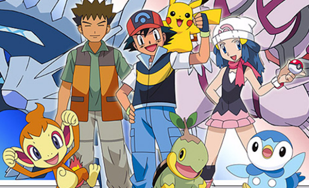 |
| 6.-Neon Genesis Evangelion |
Esta serie de tan solo 26 episodios se estrenó en octubre de 1995 y dejó una gran impresión entre los aficionados del anime mecha.
Cuando unos seres malignos descienden a la Tierra para destruir a la humanidad, Shinji, un chico de 14 años, se une a un reducido escuadrón de pilotos bajo el mando de su padre del que estaba distanciado. Para tal fin, dicho escuadrón utiliza máquinas y robots gigantes que parecen tener mente propia. |
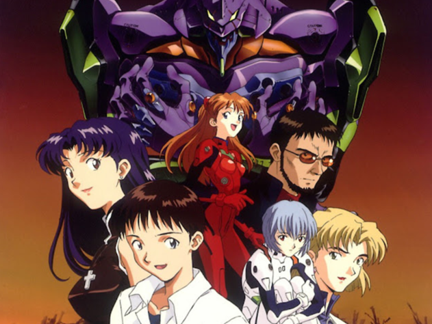 |
| 7.-Transformers |
Transformers es una franquicia de entretenimiento que se establece a partir de 1984 basada en la línea de juguetes de Takara Tomy. Luego de la sociedad entre Takara y Hasbro se desarrollan una serie de exitosos proyectos que incluyen los animes, películas, mangas, videojuegos, series, etc.
La trama de Los Transformers está basado en dos tipos de razas de robots: los Autobots y los Decepticons, ambos originarias del planeta Cybertron. |
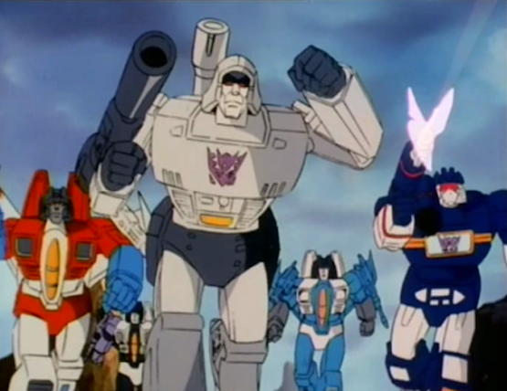 |
| 8.- Doraemon |
Doraemon se inició como un manga escrita e ilustrada por Fujiko F. Fujio, publicado en Japón a fines de 1969. Desde diciembre de 1969.
En 1973 se adaptaría la historia para la televisión, aunque recién a partir de 1979 tendría notorio éxito ya incluso a nivel internacional. Tanto el manga como el anime tuvieron gran aceptación entre el público. |
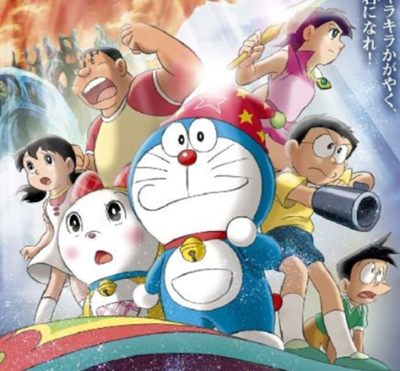 |
| 9.- Sailor Moon |
Esta famosa serie japonesa se inicia como un manga a fines de 1991 con texto e imágenes de Naoko Takeuchi. En esta serie se volvió a popularizar el subgénero de las chicas mágicas y el sentai.
El éxito del manga originó la producción del anime en la cadena de televisión japonesa TV Asahi entre 1992 y 1997 con doscientos capítulos. A partir del éxito de la serie se produjeron también diversas películas animadas, especiales y memoriales. |
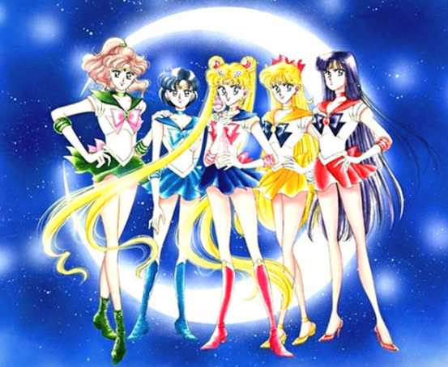 |
| 10.- Candy Candy |
es un exitoso manga japonés de 1975 escrito por Kyōko Mizuki (Keiko Nagita) e ilustrado por Yumiko Igarashi creadoras que tuvieron conflictos legales por los derechos del merchandising de la serie. El anime se inició en 1976 y también tuvo mucho éxito a nivel internacional. Manga y anime tuvieron su conclusión en 1979. |
 |
| 15.-Fullmetal Alchemist |
|
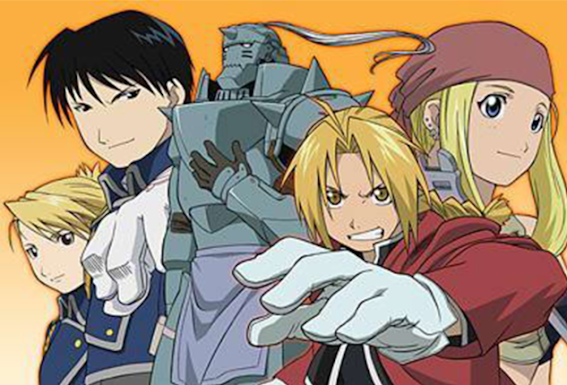 |
| 17.-Samurai X (Rurouni Kenshin) |
|
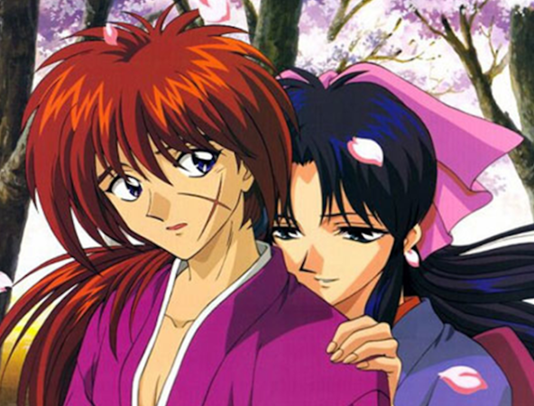 |
| 19.-Super campeones |
|
 |
| 20.-Super Dimensional Fortress Macross(Robotech) |
|
 |
| 21.-Fairy Tail |
|
 |
| 21.-Fairy Tail |
|
 |
| 23.-La princesa caballero |
|
 |